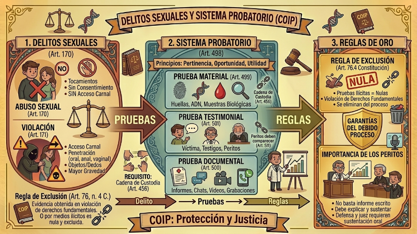

El Código Orgánico Integral Penal (COIP) diferencia los delitos sexuales bajo criterios anatómicos y de voluntad. La distinción es crítica para la imposición de penas privativas de libertad.

Delitos contra la Integridad Sexual
Abuso Sexual (Art. 170): Se configura por tocamientos o actos de naturaleza sexual realizados sin consentimiento, pero que no implican acceso carnal ni penetración.
Violación (Art. 171): Se considera el tipo penal más grave en este capítulo. Ocurre mediante:
Acceso carnal: Introducción total o parcial del miembro viril.
Penetración: De cualquier objeto, órgano o dedo por vía oral, anal o vaginal.
El Sistema Probatorio (Art. 498 COIP)
Para que una prueba sea valorada por un juez, debe cumplir con los principios de pertinencia, utilidad y oportunidad (Art. 454). Se clasifican en:
1. Prueba Material (Art. 499): Objetos, huellas. Su validez depende estrictamente de la Cadena de Custodia (Art. 456). Si desde la recolección en la escena hasta su análisis en el laboratorio el indicio no fue sellado y registrado correctamente, el juez puede desestimarlo.
2. Prueba Testimonial (Art. 501): Declaraciones de víctimas y testigos. Los peritos (Art. 511) no pueden limitarse a entregar un informe escrito; deben comparecer obligatoriamente al juicio para explicar su técnica y ser interrogados por las partes.
3. Prueba Documental (Art. 500): Incluye actas, chats, correos y videos. Estos elementos sirven para corroborar los hechos narrados por los testigos.